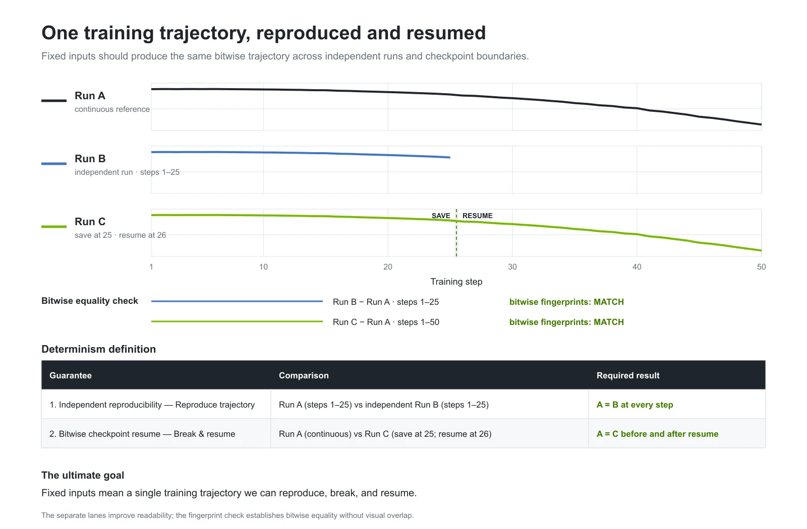
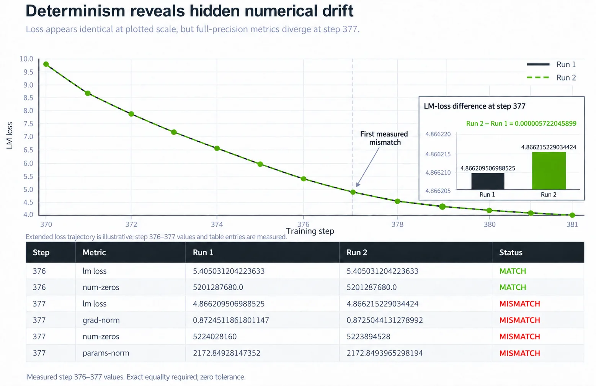
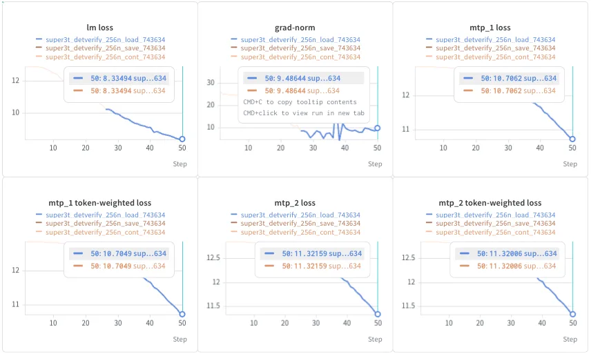
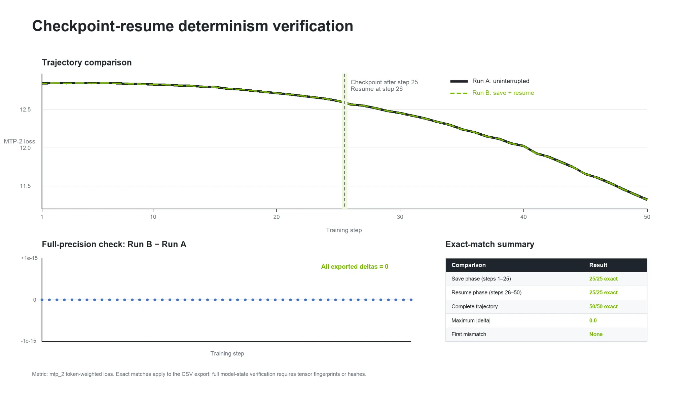
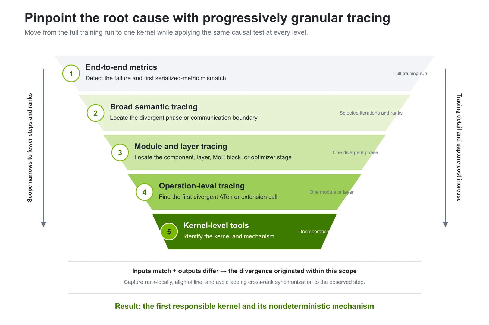
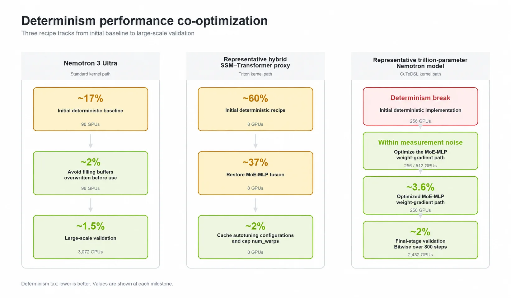
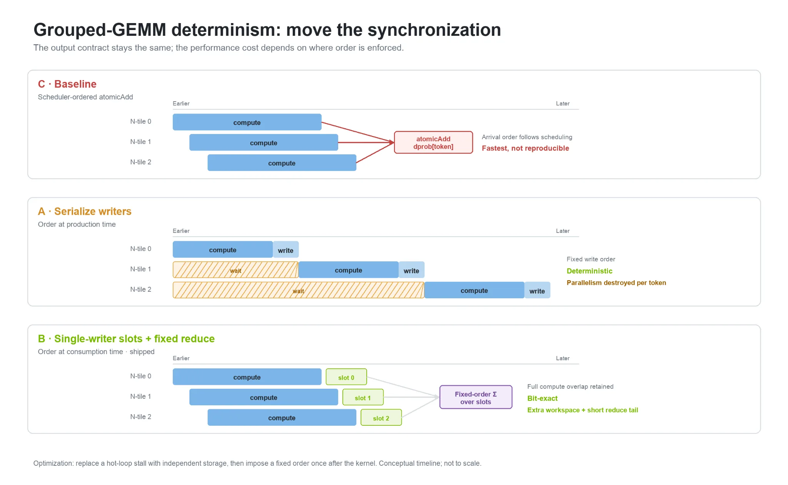

训练万亿参数模型时，两次相同的运行应该产生逐位相同的结果，中断恢复也不该改变数值轨迹。NVIDIA用确定性配方、五层分层追踪和内核优化，把确定性税从17%~60% 压到约2%，在2,432 GPU上800步保持逐位相同。
比特确定性要求：在数据顺序、架构、配方、并行策略、软件、运行时设置和硬件都固定的前提下，独立运行与checkpoint恢复运行走同一条数值轨迹。Megatron Core保证两点。
独立可复现：从同一初始状态启动的两次运行，每一步都逐位相同。比特级checkpoint恢复：保存并恢复一次或多次checkpoint的运行，与不间断运行逐位相同。
固定输入应该在独立运行与checkpoint边界上产生同一条逐位轨迹。最终目标是：固定输入意味着一条可以复现、中断并恢复的训练轨迹。

比特确定性给大规模预训练带来四个好处。

生产和主线训练运行成本高昂，需要可靠的成功保证。比特确定性让故障可复现、loss尖峰可调试、系统变更可验证、中断的万亿参数训练可恢复。在万亿参数规模，一点点放慢都会浪费数千GPU天，所以确定性训练必须高效。
打印出来的loss值不够敏感，无法证明逐位相同。两次运行可以打印出相同的舍入后loss，而梯度或参数的低位比特已经不同。
更强的验证流程是每一步对选定的数值指标做指纹：训练loss、语言建模loss、负载均衡loss、多token预测（MTP）loss、梯度范数。同一配置跑两次，逐步对比这些指纹，第一个不匹配的step帮助缩小排查范围。

验证比特级checkpoint恢复时，把不间断的参考运行与checkpoint恢复运行对比。每次恢复后，验证参数、优化器状态、RNG状态、数据位置和后续输出与参考运行逐位相同。万亿参数Nemotron模型的checkpoint路径保留全精度真值，并通过训练时相同的转换路径重建运行时表示。

在大规模下，非确定性可能时有时无、与拓扑相关，loss明显分叉时第一个不同的比特可能早已出现。Megatron-LM提出的指纹追踪流程是：记录有序的、按rank的张量指纹，离线对比。先确认种子、数据顺序、batch大小、并行策略、容器和软件栈完全一致。
从端到端对比开始，逐步缩小捕获范围：训练迭代、阶段、模块、操作、内核。如果两次运行进入某个范围时输入逐位相同、离开时输出不同，分叉就发生在这个范围内。
不要只追踪loss明显分离的那个迭代，第一个不同的比特可能出现得更早。用宽追踪定位最早分叉的迭代和rank，再在该范围内启用细粒度的操作与内核追踪。
同一个因果测试在每一层都适用：输入匹配、输出不同，分叉就源于这个范围。按rank本地捕获、离线对齐，避免给被观测的step增加跨rank同步。
| 某个rank上的首次不匹配 | 解读 | 下一步 |
|---|---|---|
| 输入匹配，输出不同 | 候选源头 | 排查该操作或其隐藏生产者 |
| 输入输出都不同 | 下游接收者 | 继续向上游追踪 |
| 被追踪的rank上无源头 | 源头在捕获范围之外 | 扩大迭代窗口或rank集合 |

“首次不匹配”是按每个rank单独算的，序列号不能跨rank建立顺序。如果很多rank指向同一个源头操作，该操作本身很可能是非确定性的；如果只有部分rank指向，排查拓扑、rank布局、输入分布和归约顺序。
每个选定的rank把轨迹写进文件，不引入集合通信或跨rank排序，降低掩盖正在调查的竞态的风险。按与运行无关的身份对齐事件，比如操作名、出现次数和模块范围。查找输入指纹相同、输出指纹不同的点：
hash(input_run_A) == hash(input_run_B)
hash(output_run_A) != hash(output_run_B)指纹用GPU上的torch.hash_tensor记录，附带形状、dtype和元素数。MXFP8或NVFP4张量同时给编码值和缩放缓冲做指纹。整张量XOR指纹检测不到置换；对路由图、MoE分发输出这类顺序敏感数据，按行或分块做指纹（用dim参数）。指纹是高效检查，但匹配不保证逐位相同，用字节级对比确认逐位相等。
定因之前先排除误报。TorchDispatchMode只能观测走PyTorch调度器的ATen操作，自定义内核可能逃出追踪范围；如果首次不匹配出现在简单的view、slice或加法上，去探测产生其输入的自定义内核。未初始化张量、未完成的异步集合通信、非阻塞拷贝可能在内容有效前被读取，排除这些再断言生产者非确定。
修复后用配对运行验证：原来的配对应该复现分叉，打过补丁的配对应该逐位相同；判断补丁是修正了非确定性实现，还是绕开了它；测量新增的性能代价。注意比特确定性只在相同软硬件环境内验证，跨GPU代际、网络配置或库版本的对比超出范围，结果可能不同。
确定性配方如果开销巨大，只能用于调试，无法生产。确定性和非确定性执行从一开始就要协同优化。这项工作用万亿参数Nemotron模型：Mamba式状态空间模型（SSM）层加Transformer注意力层的混合架构。确定性训练要覆盖SSM与注意力内核、低精度计算、分布式通信和层类型间的切换。
先建受控基线：同一模型、硬件、batch大小、并行策略、精度格式、软件环境和测量窗口，对比确定性执行与最快非确定性配方。对比吞吐和step时间、峰值显存与GPU利用率、暴露的通信时间、主要内核组的耗时，算出确定性税。数据只在训练性能稳定后采集。
三条工作线把step时间的确定性开销从两位数压到个位数低位。Nemotron 3 Ultra从约17% 降到2%（避免填充会被使用前覆盖的缓冲），在3,072 GPU上进一步降到1.5%。混合Triton代理从约60% 降到37%（恢复MoE-MLP融合），再降到2%。CuTeDSL优化的权重梯度路径在256 GPU上约3.6%。2,432 GPU上的大规模Nemotron配方测得稳态确定性开销约2%，800步内保持比特确定。

几块GPU上的低确定性税不能保证生产规模同样低。通信、同步、流水线气泡、专家路由和负载均衡都会改变相对开销。假设一个10,000 GPU上100天的非确定性基线，把开销从15% 降到5% 能省10天，即100,000 GPU天。
grouped-GEMM的epilogue里，多个N-tile原来累加到同一个dprob[token] 地址，结果取决于它们的到达顺序。把写入者串行化恢复了确定性，但并行度被破坏。
优化是给每个N-tile一个私有输出槽：内核内保持并行执行，所有写入者完成后按固定顺序合并槽。输出契约不变，性能代价取决于顺序在何处强制执行。

新内核、融合、精度格式或并行配置都可能引入非确定性。Megatron-LM用三层检查防退化。
| 观察到的症状 | 可能原因 | 诊断方法 | 解决办法 |
|---|---|---|---|
| 两次运行从第一步就分叉，但不稳定 | 运行时自动调优选了不同的内核配置 | 对比所选配置，追踪最早受影响的输出 | 固定或缓存验证过的配置 |
| MoE运行只在开启融合辅助损失时分叉 | 归约顺序未固定 | 逐个关闭融合并追踪损失计算 | 使用确定性归约或关闭该融合 |
| 恢复运行逐渐偏离连续运行 | RNG状态恢复不完整 | 恢复前后对比RNG状态 | 逐位保存并恢复每个RNG流 |
| 软件或容器更新后出现分叉 | 底层库内核发生了变化 | 二分软件栈并做最小内核复现 | 在修复前选择确定性内核路径 |
| 加载checkpoint后参数立刻不同 | 低精度权重或缩放元数据重建方式不同 | 跨存取对比数值与缩放元数据 | 保留全精度真值与精确的重建路径 |
| 配方在小规模通过、大规模失败 | 规模相关的通信或专家并行路径 | 逐级扩大规模并追踪选定的rank | 隔离并修正第一个规模相关的操作 |
比特确定性让大规模预训练更易调试和恢复。Nemotron案例说明内核与配方优化能把它的性能代价压下来。上手时先查Megatron Core用户指南找受支持的配方，然后对比独立运行与checkpoint恢复运行验证可复现性，并在计划使用的软硬件环境里验证开销。
参考：